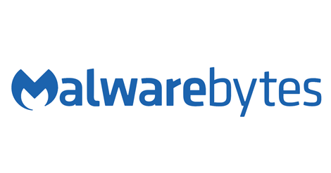

Type of program: this is an antivirus program
Tipo de programa: Este programa es un antivirus
This program has a free version
Este programa tiene versión gratuíta.
there isn´t an open source
No tiene codigo abierto
First launched on January/2006, Malwarebytes detects and eliminates malware. Available in two options, one of them free (which scans and eliminates malware when activated manually) and paid (which can be programmed to scan periodically and also scans USB drives).
Lanzado por primera vez en enero de 2006, Malwarebytes detecta y elimina el malware. Disponible en dos opciones, una de ellas gratuita (que escanea y elimina el malware cuando se activa manualmente) y paga (que puede programarse para escanear periódicamente y también escanea unidades US
- Detects and eliminates worms, trojans and rogue software.
- Detects ransomware, exploit and protects from malicious web sites.
- Multilingual support
- detecta y elimina gusanos, troyanos y software espias
- detecta ransomware, errores y proteje de paginas web maliciosass
- Multilingue
- Windows
- OS X
- Linux

Back to Index Next programLanguaje selection: